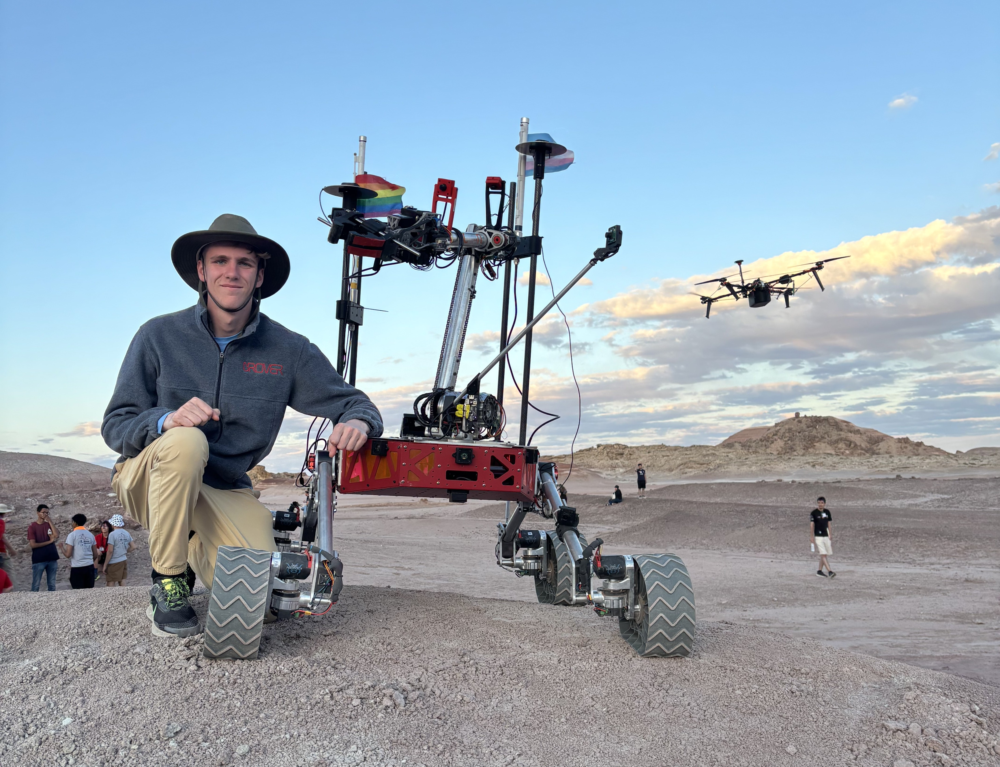
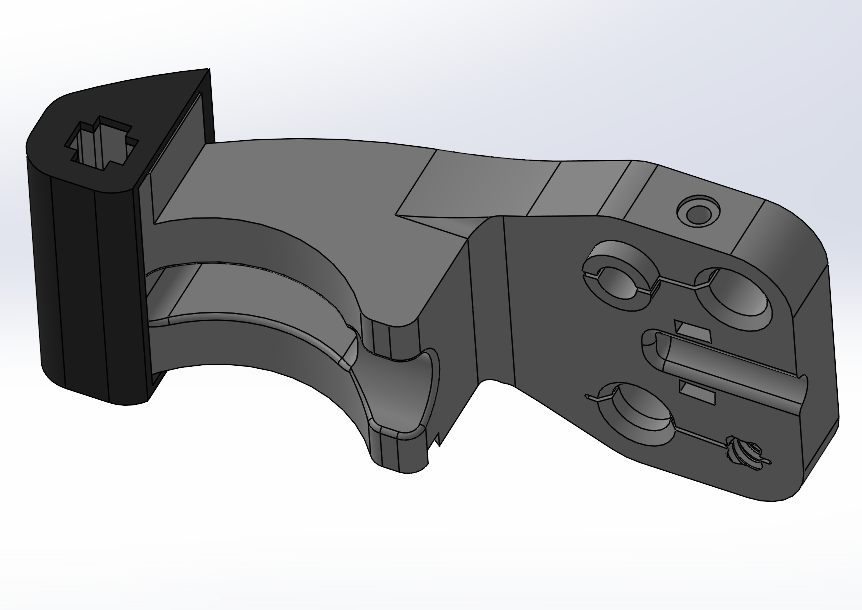
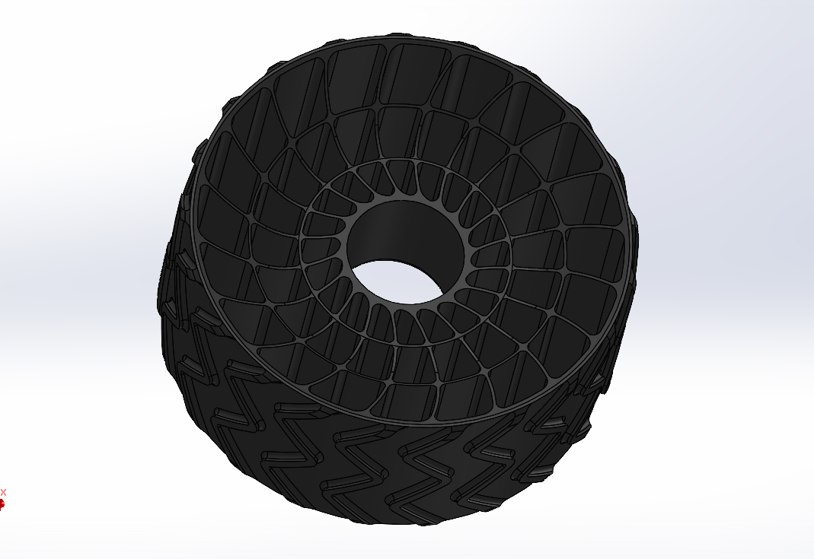

Mars Rover Club



As mechanical team co-lead, I work on designing and integrating mechanical systems across the rover. Most recently, I redesigned the rover's wheels to improve stiffness and reduce deformation under load, testing various materials and spoke patterns to find the optimal design.
I previously worked on a redesign of the rover's gripper to allow for insertion of a USB drive into a mock mars lander.